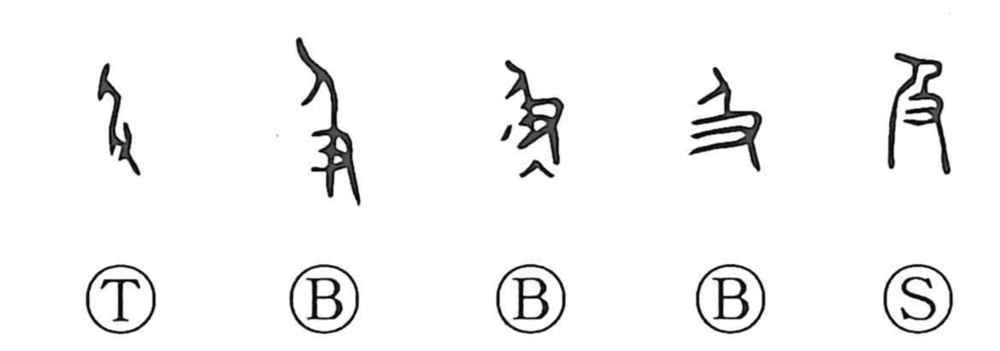

及

Kun: oyobu, oyobi, oyobasu | On: kyuu
to reach ・ to extend to ・ and ・ to catch up
Explanation
This character fuses the person 人 with the hand 又, the latter showing a hand thrust forward. Together they depict a hand reaching out from behind someone to seize the person ahead, hence the senses of catching up and, more broadly, reaching or extending to. From this base form, 急 adds the heart 心 beneath 及 to picture a heart flustered in the hurry to overtake, while 扱 places the hand radical beside 及 to show the hands attaining to and laying hold of something.